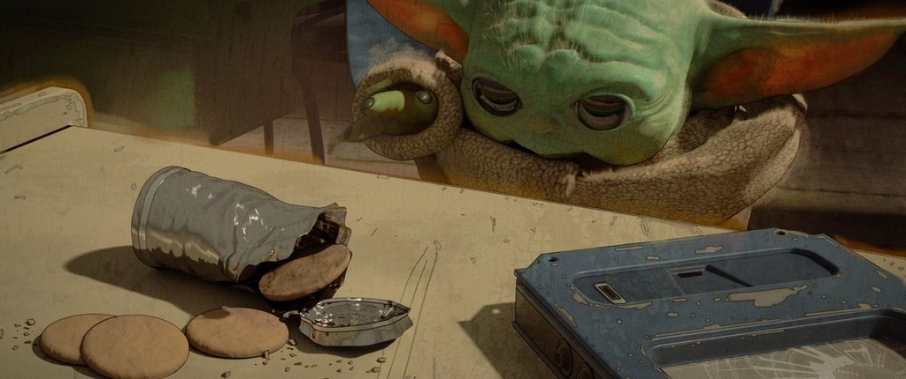

Mandalorian
«Мандало́рец» (англ. The Mandalorian), также известен, как «Звёздные во́йны: Мандало́рец» (англ. Star Wars: The Mandalorian), — американский телесериал в жанре космический вестерн, созданный Джоном Фавро и выходящий на стриминговом сервисе Disney+. Это первый игровой сериал, являющийся составной частью вселенной «Звёздных войн». Действие «Мандалорца» разворачивается пять лет спустя после событий «Возвращения джедая» и за 25 лет до событий «Пробуждения силы». Главным героем является охотник за головами Дин Джарин из клана мандалорцев, обитающий на окраине Новой Республики. Главную роль исполняет Педро Паскаль.
Автор работы